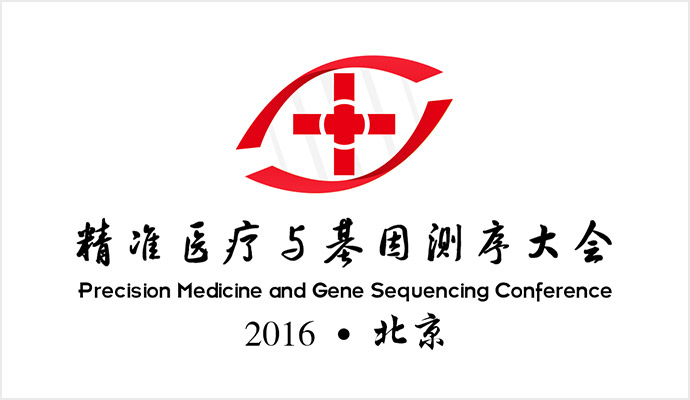
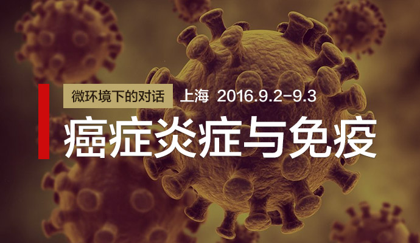

<!--
@description: "我的"页面
@author: 孔
@update: name (2016-10-08)
-->
<!--
k==kong
-->
<ion-view class="tab-my" view-title="探基-基因行业互助平台">
	<ion-content class="k_nologin">
		<div class="k_no">
			<p>还未登录，请先
				<a href="#/login_register"><button class="button button-clear" title="登录">登录</button></a>
			</p>
		</div>
		<div class="k_prompt">
			<p class="k_play"><span><i class="icon ion-play"></i></span></p>
			<p>还没有视频播放记录，开始学习吧！</p>
		</div>
	</ion-content>
	<ion-scroll class="k_haslogin" hidden style="height: 93%;">
		<div class="k_has">
			
			<p>sofeeling @#^!*$% 兼容特殊字符</p>
		</div>
		<ion-tabs class="tabs-top">
			<ion-tab title="我的视频">
				<ion-view>
					<ion-content>
						<div class="k_lookedList">
							<ion-lists>
								<ion-item class="item item-thumbnail-left">
									
									<h2>NEJM：新算法可降低NIPT的假阳性</h2>
									<p><i>谭维仁</i><i> 教授</i><span><i class="icon ion-ios-videocam"></i><i>331</i></span></p>
								</ion-item>
								<ion-item class="item item-thumbnail-left">
									
									<h2>NEJM：新算法可降低NIPT的假阳性</h2>
									<p><i>谭维仁</i><i> 教授</i><span><i class="icon ion-ios-videocam"></i><i>331</i></span></p>
								</ion-item>
								<ion-item class="item item-thumbnail-left">
									
									<h2>NEJM：新算法可降低NIPT的假阳性</h2>
									<p><i>谭维仁</i><i> 教授</i><span><i class="icon ion-ios-videocam"></i><i>331</i></span></p>
								</ion-item>
								</ion-list>
								<ion-item class="item item-thumbnail-left">
									
									<h2>NEJM：新算法可降低NIPT的假阳性</h2>
									<p><i>谭维仁</i><i> 教授</i><span><i class="icon ion-ios-videocam"></i><i>331</i></span></p>
								</ion-item>
								<ion-item class="item item-thumbnail-left">
									
									<h2>NEJM：新算法可降低NIPT的假阳性</h2>
									<p><i>谭维仁</i><i> 教授</i><span><i class="icon ion-ios-videocam"></i><i>331</i></span></p>
								</ion-item>
								<ion-item class="item item-thumbnail-left">
									
									<h2>NEJM：新算法可降低NIPT的假阳性</h2>
									<p><i>谭维仁</i><i> 教授</i><span><i class="icon ion-ios-videocam"></i><i>331</i></span></p>
								</ion-item>
								</ion-list>
						</div>
					</ion-content>
				</ion-view>
			</ion-tab>
			<ion-tab title="我看过的"></ion-tab>
		</ion-tabs>
	</ion-scroll>
</ion-view>